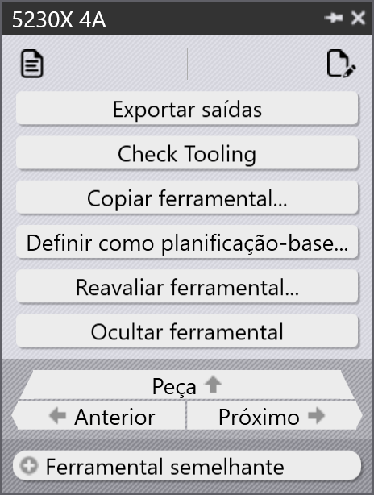
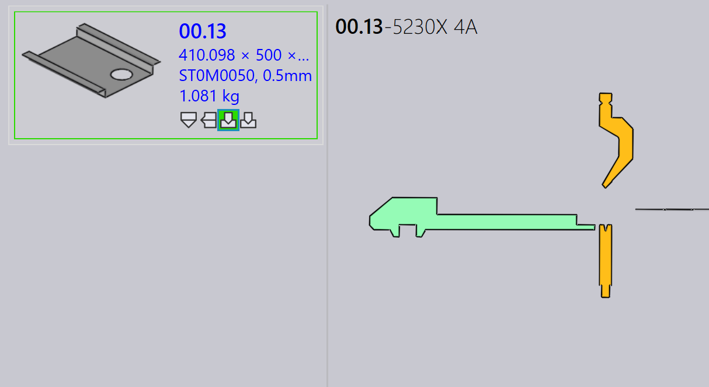
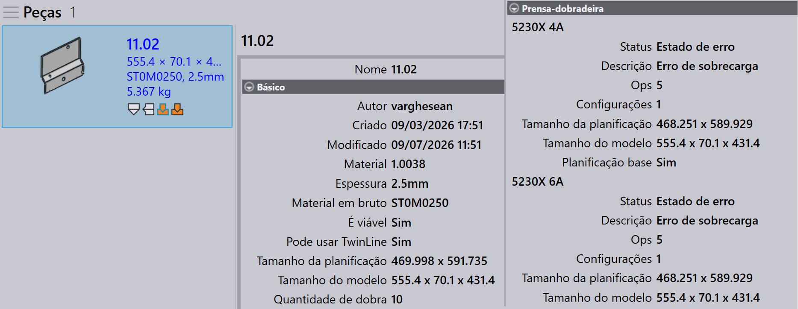
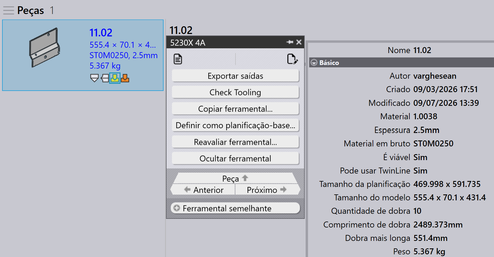
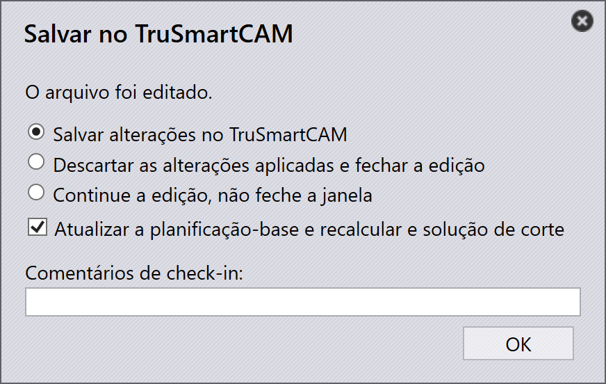
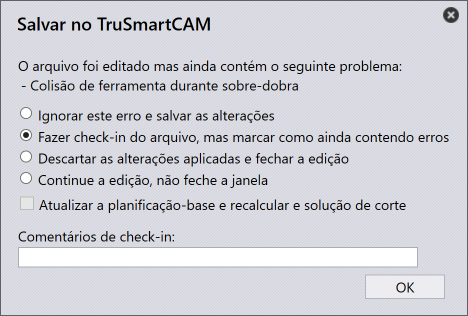
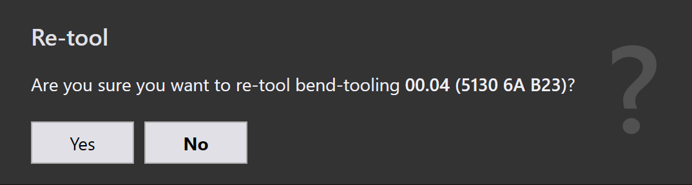

Painel de ferramental
Esta seção explica as ações relacionadas ao ferramental, como Exportar saídas, Check Tooling, Ocultar ferramental, Definir como planificação-base…, Copiar ferramental…, e outras opções usadas para gerenciar instâncias de ferramental.
 |
|
Exportar saídas
Esta opção exporta a saída da peça para o destino configurado em Ajustes de fábrica. (Consulte Bend Settings e Cut Settings)
Apenas os ferramentais associados à operação de ferramental selecionada são exportados, não a peça inteira.
| Os arquivos exportados dependem do tipo de operação. Para operações de Bend e Fold, são gerados arquivos NC e relatórios. Para operações de Cut e Punch, apenas os arquivos da peça são exportados. |
Check Tooling
-
Se houver uma alteração nas configurações de CAM ou se uma ferramenta de dobra for perdida, você não precisa fazer o Re-tool da peça.
-
Em vez disso, use Check Tooling para validar o ferramental existente sem fazer nenhuma alteração.
-
Se a validação falhar, o status do ferramental dessa instância é atualizado, e os arquivos de saída relacionados são removidos.
-
Check Tooling também detecta peças em que os erros foram previamente substituídos manualmente usando Ignorar erros, e atualiza seu status para erro, se necessário.
Copiar ferramental…
O copy tooling permite aplicar rapidamente o ferramental de dobra de uma solução para outras, economizando tempo e esforço.
Isso copia a configuração de punção, sequência e backgauge de um ferramental de referência selecionado (solução) e tenta aplicar as mesmas configurações a todas as outras soluções.
-
Se a configuração copiada for viável para uma máquina de destino, ela é salva e utilizada.
-
Se a configuração não for viável, o ferramental original dessa máquina permanece inalterado.
Por exemplo, você pode ter ferramentais diferentes para máquinas diferentes:
-
Aqui, a Máquina 5230X 4A usa um punção Gooseneck, a Máquina 5230SX 6A usa um punção Pointed.

Quando você usa o Copiar ferramental… na Máquina 5230X 4A, ele tenta copiar a configuração Gooseneck para todas as outras máquinas.

As mesmas configurações de punção, sequência e backgauge são aplicadas sempre que possível. Se a configuração copiada não puder ser usada, o ferramental original permanece inalterado.

Após aplicar o copy tooling, a configuração Gooseneck foi aplicada com sucesso a todas as outras máquinas onde ela é viável.
Definir como planificação-base…
O recurso Definir como planificação-base… define qual ferramental de bend ou fold é usado como o tamanho flat de referência para gerar soluções de corte. Quando um ferramental é marcado como Base-Flat, o TruSmartCAM atualiza o tamanho flat da peça com base nessa máquina e regenera as soluções de corte de acordo. Os ferramentais Base-Flat são exibidos com uma borda azul na interface.
Máquinas de dobra diferentes podem produzir pequenas variações no tamanho flat para a mesma peça. Quando você define um ferramental como Base-Flat, o TruSmartCAM usa o tamanho flat dessa máquina como referência mestre e recalcula automaticamente as soluções de corte.
Aqui, podemos ver tamanhos flat diferentes para a mesma peça em várias máquinas:

Neste exemplo, o ferramental 5230X 4A é definido como Base-Flat, e o tamanho flat atualizado é aplicado nas propriedades da peça:

Seleção automática de base flat
Quando a configuração da factory Aplicar correção de planificação durante o processo de dobra está habilitada:

-
O TruSmartCAM define automaticamente o ferramental de dobra (que contém a tabela de comprimento máximo de dobra) como Base-Flat durante a importação da peça.
-
Se o ferramental de dobra selecionado encontrar um erro ou não for viável, o TruSmartCAM alterna de forma inteligente e define outro ferramental de dobra válido como Base-Flat. Isso garante que a referência do tamanho flat e as soluções de corte sempre permaneçam consistentes e válidas sem intervenção manual.
Gerenciamento aprimorado de base flat
O TruSmartCAM fornece opções de Base-Flat no diálogo Salvar no Praxis ao salvar edições de ferramental de bend ou fold. Essas opções aparecem apenas para ferramentais no estado OK e garantem que o tamanho flat e as soluções de corte permaneçam precisos.
Definir como planificação-base e calcular solução de corte
Esta opção é usada para marcar um ferramental como Base-Flat pela primeira vez e gerar automaticamente a solução de corte correspondente.
Aparece quando:
-
O ferramental não está atualmente marcado como Base-Flat.
-
O usuário fez o check-out do ferramental para edição e está salvando as alterações.

Para usar esta opção, faça o check-out do ferramental de bend ou fold e faça as modificações necessárias, como alterações nos parâmetros de dobra ou no tamanho flat. Pressione Ctrl+S para salvar as alterações. No diálogo Salvar no Praxis, escolha Definir como planificação-base e calcular solução de corte e clique em OK. O TruSmartCAM definirá o ferramental como Base-Flat e gerará a solução de corte usando o tamanho flat atualizado.
Atualizar a planificação-base e recalcular e solução de corte
Esta opção é usada quando o ferramental já está marcado como Base-Flat e foi editado, exigindo que o tamanho flat e as soluções de corte sejam regenerados.
Aparece quando:
-
O ferramental já está marcado como Base-Flat.
-
O usuário fez o check-out, editou e está salvando as alterações.

Ao editar o ferramental Base-Flat existente, atualize os parâmetros de dobra ou a geometria do tamanho flat conforme necessário. No diálogo Salvar no Praxis, escolha Atualizar a planificação-base e recalcular e solução de corte. O TruSmartCAM atualizará então o ferramental Base-Flat e regenerará todas as soluções de corte relacionadas para refletir as últimas alterações.
|
Apenas um ferramental de dobra pode ser definido como Base-Flat por vez. Quando o Base-Flat é alterado, as soluções de corte existentes são automaticamente reprocessadas. Este recurso está disponível para ferramentais de bend e fold no TruSmartCAM. |
Reavaliar ferramental…
Esta opção reprocessa o ferramental selecionado para a peça.
Clique com o botão direito no ferramental necessário no painel de ferramental e clique em Reavaliar ferramental…
Um diálogo de confirmação é exibido antes de prosseguir.

Clique em Sim para continuar com o re-tooling, ou Não para cancelar a operação.
Apenas o ferramental selecionado é retoolado. Outros ferramentais associados à peça não são afetados. As saídas existentes relacionadas ao ferramental selecionado são removidas e regeneradas durante o processo de re-tooling.
Use esta opção quando os dados do ferramental estiverem desatualizados, incorretos, ou quando forem feitas alterações nas configurações de máquina ou ferramental.
Ignorar erros
-
Se uma instância ferramentada exibir um aviso, e você ainda quiser prosseguir com ela, você pode substituir o aviso clicando em Ignorar erros.
-
Isso permitirá que o sistema exporte os arquivos de saída dessa instância, mesmo que houvesse problemas de ferramental.
| Use Ignore Errors apenas quando tiver certeza de que o aviso pode ser ignorado com segurança. Substituir erros reais pode levar a danos na máquina ou riscos de segurança. |
Suprimir/Cancelar supressão do ferramental
-
Quando uma máquina está inativa ou você não deseja que uma peça específica seja processada por uma máquina específica, use Ocultar ferramental para excluir essa peça do nesting nessa máquina.
-
Após suprimir, ao passar o mouse sobre a instância ferramentada é exibida uma mensagem como: “Tooling suppressed by <User name> on <Date Time>”.
-
Suprimir o ferramental remove o arquivo de saída dessa máquina e peça.
-
Use Cancelar ocultar ferramental para restaurar o status do ferramental da peça nessa máquina.
-
Quando a supressão é cancelada, o respectivo arquivo de saída é gerado novamente.